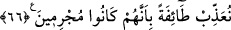
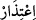
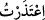

ediyorsunuz?!” Münâfıkların gerçekten alay ettiklerine ve bunun sabit olduğuna işaret
etmek üzere takrir mânâsına gelen soru (isifham)edatı, fiilin başına değil de kendisiyle
alay edilenin (yani ismin) başına getirilmiştir. Çünkü “Allah ile alay mı ediyorsunuz?”
demekle, “Allah ile mi alay ediyorsunuz?” demek arasında fark vardır. Birinci ifade,
alay etmeyi red ve inkâr, ikincisi ise Allah hakkında alay etmeyi red ve inkar mânâsına
gelir.
66. Hiç özür dilemeyin, siz inandıktan sonra kâfir oldunuz. Sizden bir kısmını
affetsek bile suç işlediklerinden dolayı bir kısmına da azap edeceğiz.
“Hiç özür dilemeyin,” Boşuna özür beyan etmekle uğraşmayın. Çünkü
mazeretlerinizin yalan olduğu malum ve geçersiz olduğu âşikardır. “İ‘tizâr (özür
dilemek)”, işlenen günahın eserini silmek demektir. et-Tibyân’da şöyle denilmiştir:
, kesmek demektir. Arapça’da “onun kalbindeki (bana karşı olan) kızgınlığı kesip
yok ettim.” anlamında “
” denilir.
“Siz inandıktan sonra” mümin göründükten sonra Rasûlullah (a.s.)’a eziyet etmek ve
dil uzatmak sûretiyle “kâfir oldunuz”. Onlar aslâ gerçek mümin olmamışlar, dâimâ
münâfık kalmışlardır.
“Sizden bir kısmını” tevbe edip samîmi mümin olmaları veya eziyet ve alay etmekten
uzak durmalarından dolayı “affetsek bile suç işlediklerinden dolayı” suç işlemede
ısrar etmeleri sebebiyle “bir kısmına azap edeceğiz.” Azap görecek olanlar, tevbe
etmeyenler, tevbeye yanaşmayanlar ve günah işlemekten çekinmeyenlerdir. Peygamber
(a.s.):, “Münâfıkların kâfir oldukları âşikar olduğuna göre artık onları öldürmeyecek
misin?” diyen kişiye: “Arapların: ‘Muhammed, ashabını öldürüyor.’ demelerini
istemiyorum. Allah başlarına bir felaket getirmek sûretiyle onların şerrinden bizi
korur.” diyerek mazeret belirtmiştir.
Bu âyetlerde şu hususlara işâret vardır:
1. Münâfıklar her ne kadar Peygamber Efendimiz (a.s.)’a vahiy indiğine ve onun
peygamber olduğuna inansalar da kalplerinde azıcık da olsa şüphe varken tek başına
îman ve dil ile ikrar etmeleri, imanlarının sâbit olmasına yetmez. Kader karşısında
tedbirin faydası olmaz. Bu, Peygamber Efendimiz (a.s.)’ın “Senin azametin ve
büyüklüğün yanında hiçbir büyüklük, sahibine fayda vermez.”[192] şeklindeki duâsının
ifade ettiği mânânın tezahürüdür.
Hediyyetü’l-mehdiyyîn adlı eserde şöyle denilmiştir: “Ben bütün peygamberlere iman
ettim, Âdem (a.s.)’ın ise peygamber olup olmadığını bilmiyorum.” diyen kimse kâfir
olur. Yine, Efendimiz Muhammed (a.s.)’ın peygamberlerin sonuncusu olduğunu ve